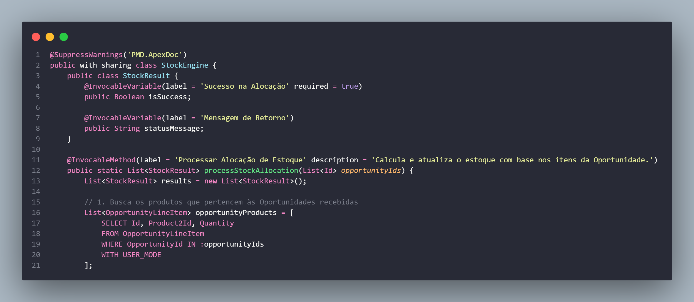
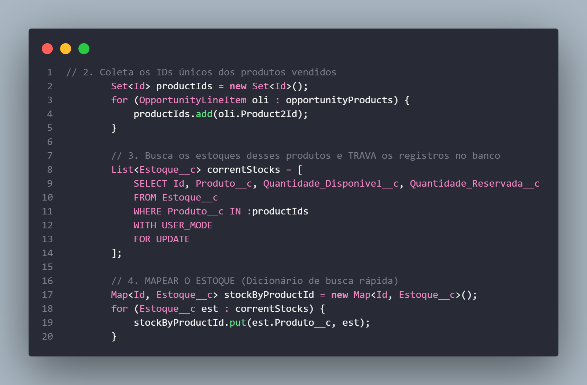
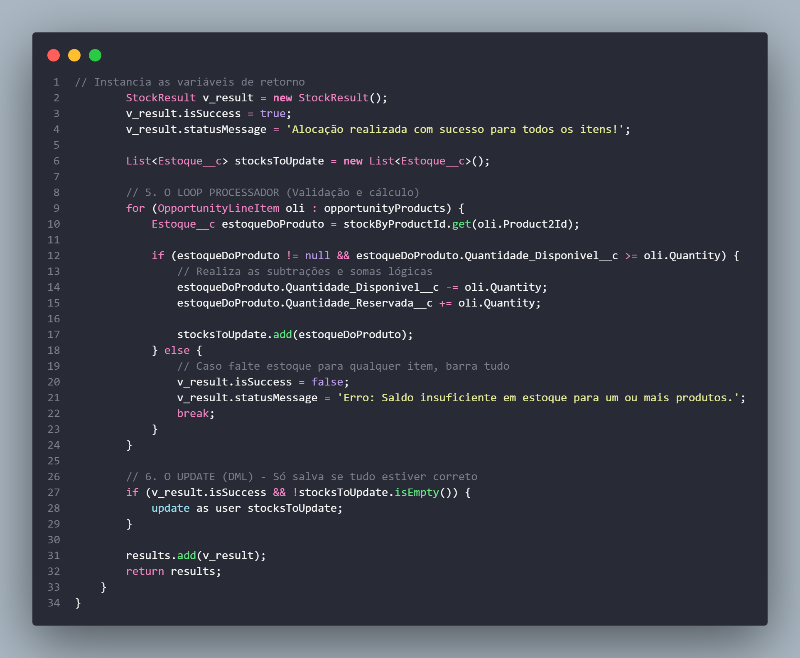

Engenharia de Concorrência — StockEngine
Classe Apex que utiliza FOR UPDATE para bloquear registros durante transações simultâneas, prevenindo race conditions no controle de estoque com base nos itens da Oportunidade.


